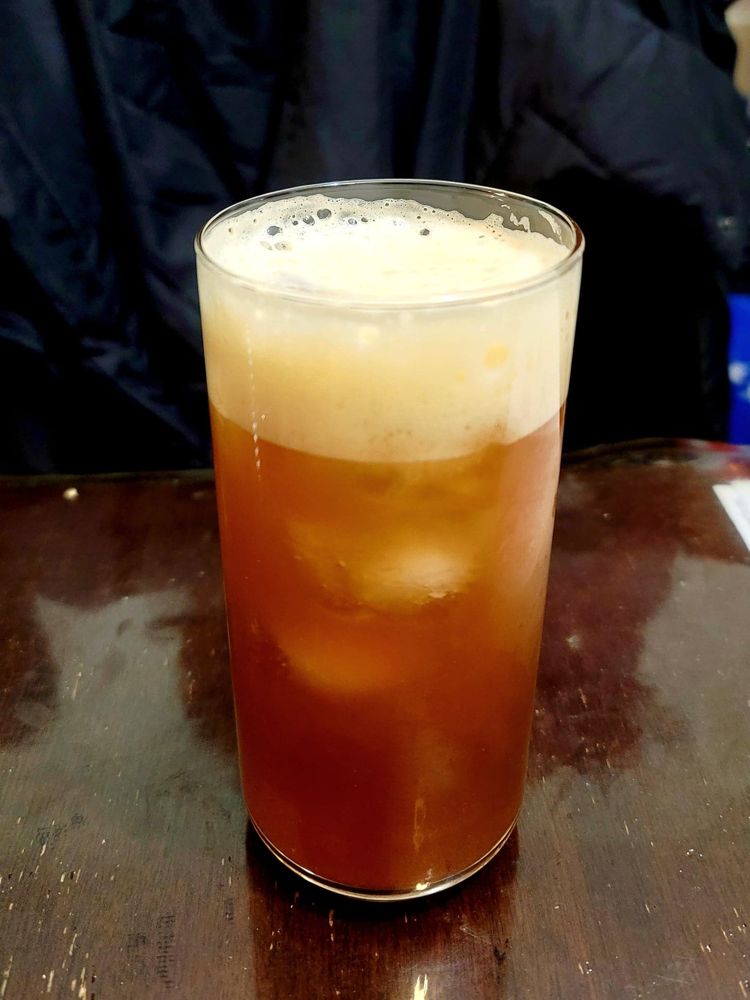

Cream Soda

Ingredients:
- 4 cups Water, non-chlorinated
- 1/2 cup Sugar
- 4 tsp Black tea, ~3g, or 4 tea bags
- 1/4 cup Raisins
- 4 tsp Vanilla extract
- 1/4 cup Ginger bug
Instructions:
- Place the water, and sugar into a pot. Heat until boiling and then remove from heat. Add in the raisins and tea and let steep until cooled completely.
- Stir in the ginger bug and vanilla extract. Strain into flip top bottles and let ferment for 3-7 days, burping regularly. Serve cold over ice.